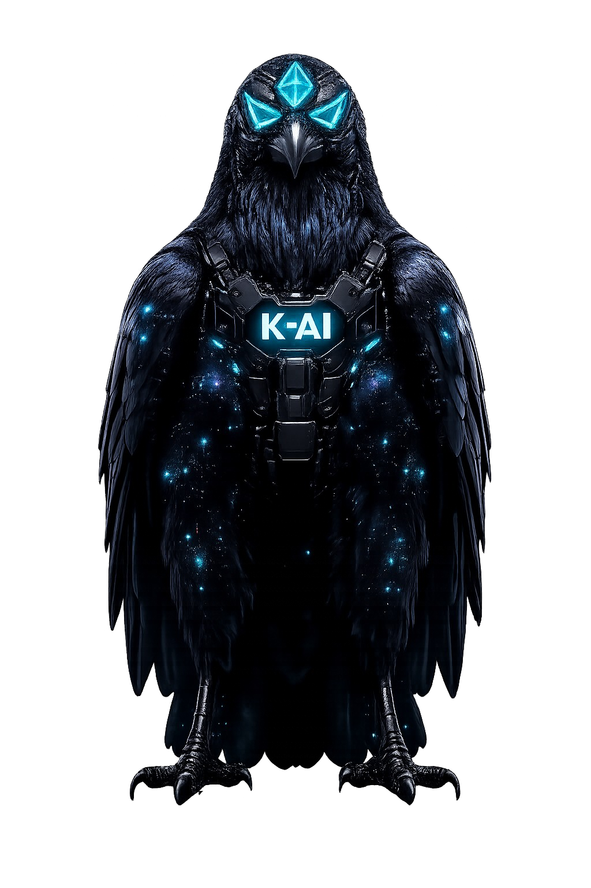

🪖 K-AI v10 PURO • CAPACETE 3D
✕ FECHAR
VISOR:
NORMAL 3D
| V
10
NORMAL
NOTURNA
RAIO X
SCANNER ⬡
K-AI
K-AI v10 • IA REAL
🎤 K-AI, Kai, Cai...
v10 AUTÔNOMO
ORGANIZAR
LIMPAR
K-AI v10 • ABAS + ESTRUTURA REPO + CONTAS + CONFIG
📁 ESTRUTURA REPO REAL
⚙️ CONTAS + CONFIG
🧠 Autônomo
ATIVO
🎤 Wake K-AI
ATIVO
📦 Repo
0 arq
+ NOVA ABA
K-AI v10 • CHAT REAL - VOZ FALA CRIADOR / TEXTO K-RIADOR
MARCADORES + RACIOCÍNIO AO VIVO v10:
K-AI v10 • MEMÓRIA + CÓDIGO REAL + EVOLUÇÃO
K-AI v10 IA REAL pronta
v10 cérebro real - responde, cria, salva, evolui
🦅
K-RIADOR v10 puro K-AI - IA real funcionando - ícone autônomo animado

0s
7s
🎤
↑
K-AI v10 PURO • Mini Menu ícone
✕
🪖 Capacete 3D - visor 4 modos
🎤 Ligar/Desligar escuta K-AI, Kai, Cai...
🧠 Evoluir agora v10 real - sempre melhora
📁 Organizar repo real - sem duplicar
🗑️ Limpar duplicatas
❌ Fechar menu